Descubre especies increíbles, ecosistemas marinos y aprende cómo proteger la vida del océano.
Especies
Ecosistemas
Protección
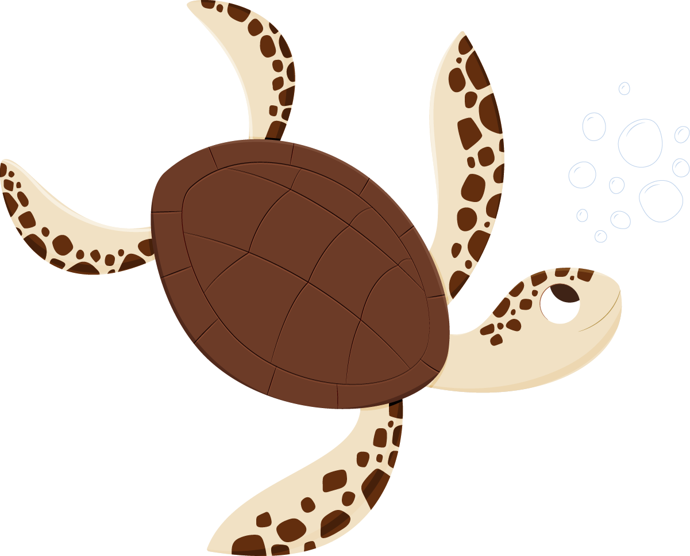
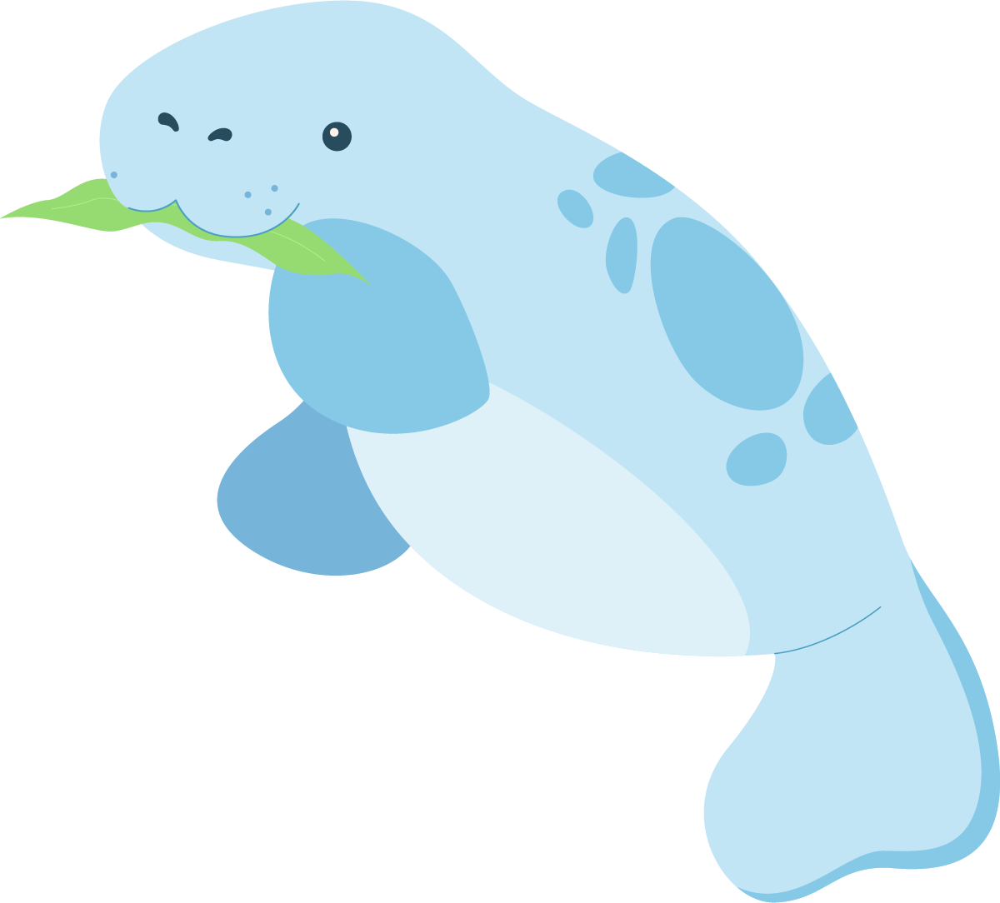
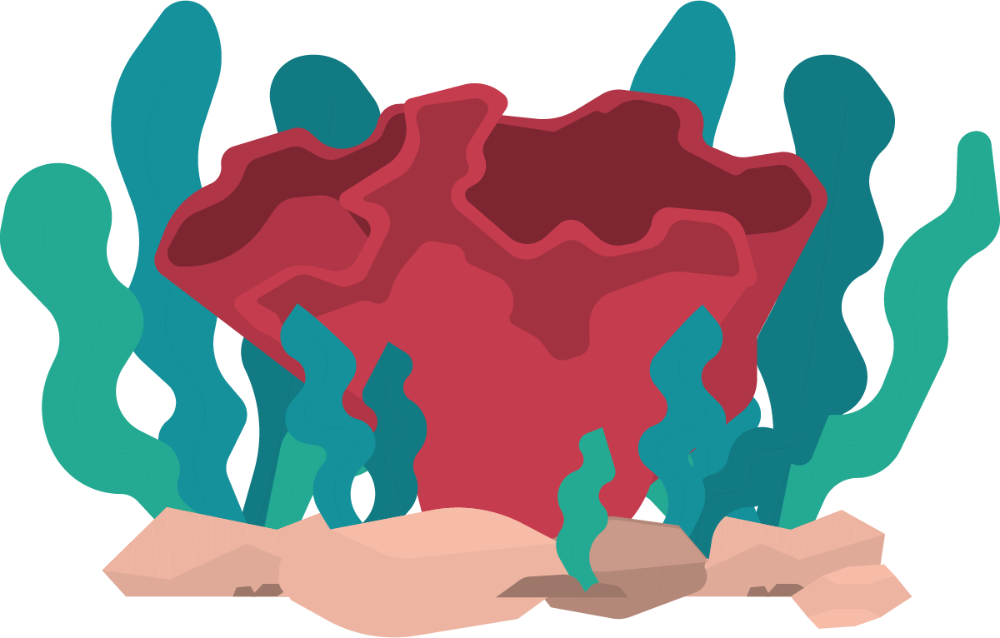
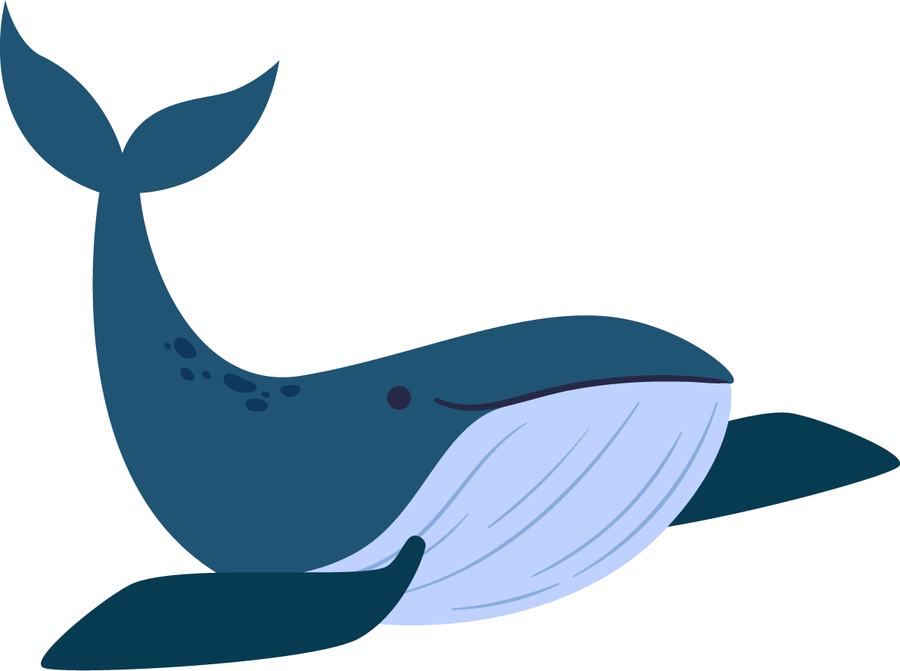
Conoce las razones de su posible extinción.
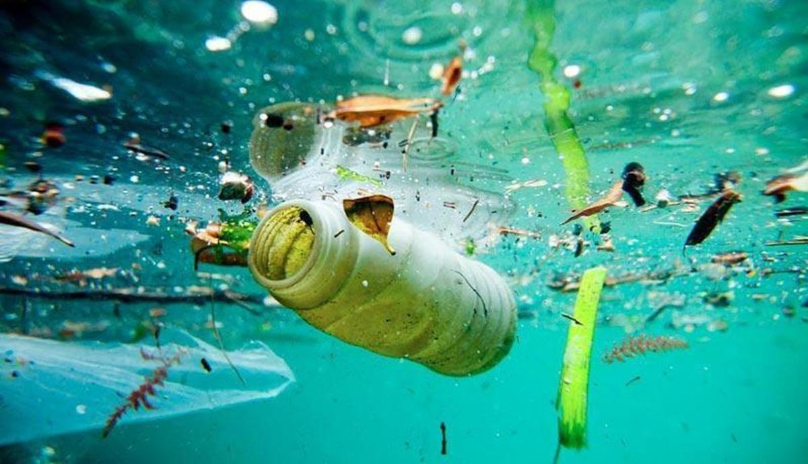
Los residuos plásticos y químicos dañan gravemente la vida marina.
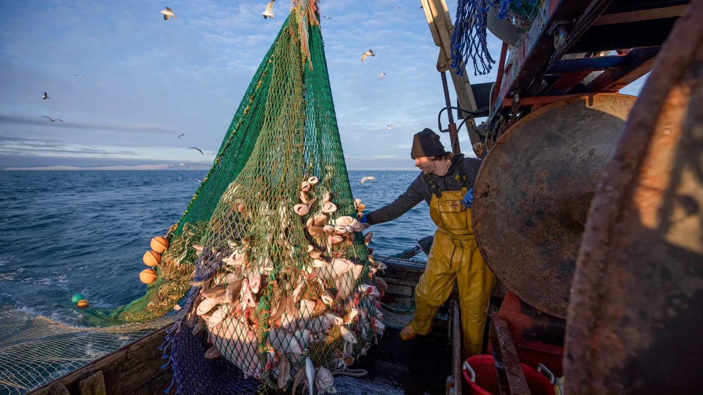
La captura descontrolada reduce la población de muchas especies.
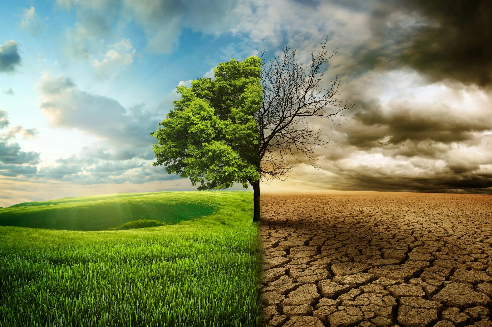
El aumento de temperatura altera los ecosistemas marinos.
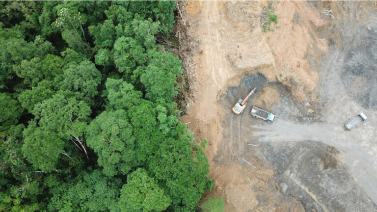
Las construcciones y el turismo afectan arrecifes y manglares.
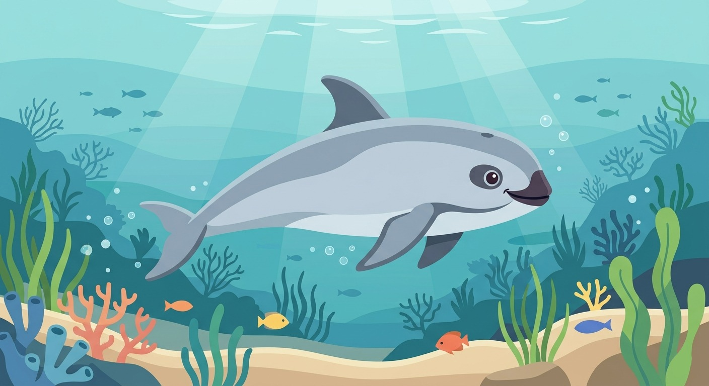
La vaquita marina es el mamífero marino más pequeño del mundo y vive únicamente en el Golfo de California. Actualmente se encuentra en peligro crítico de extinción debido a la pesca ilegal y las redes de pesca.
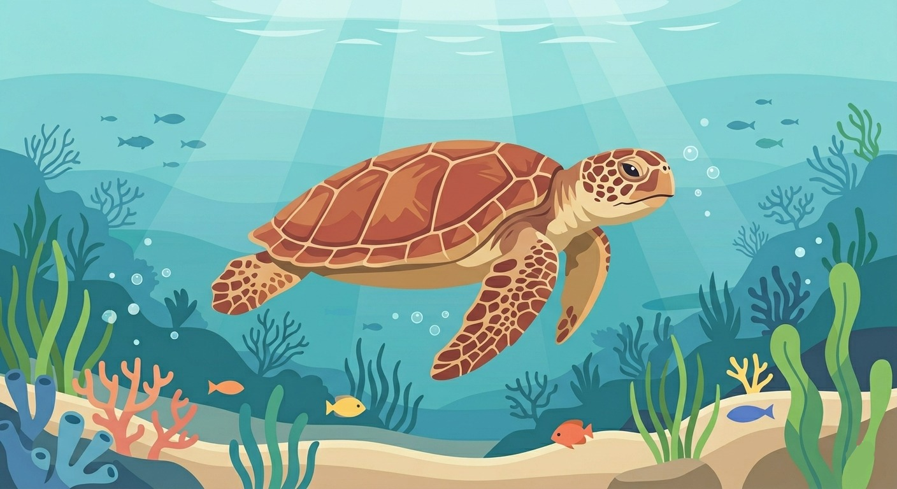
La tortuga caguama es una gran viajera de los océanos. Se alimenta de medusas y crustáceos, pero enfrenta amenazas como la contaminación marina, el plástico y la destrucción de playas.
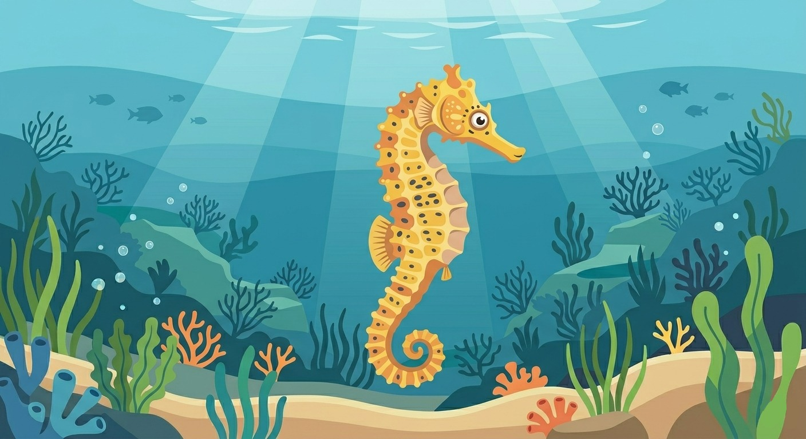
El caballito de mar del Pacífico es uno de los caballitos de mar más grandes del mundo. Vive entre arrecifes y manglares, pero la contaminación y el comercio ilegal amenazan su supervivencia.
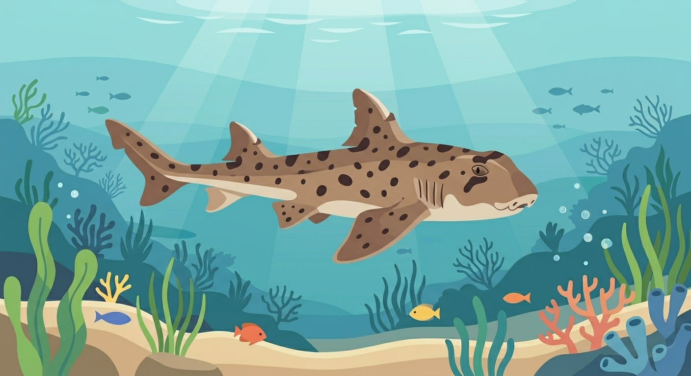
El tiburón cornudo habita en aguas del Pacífico mexicano y se caracteriza por las pequeñas protuberancias sobre sus ojos. Es una especie nocturna que ayuda a mantener el equilibrio del ecosistema marino.
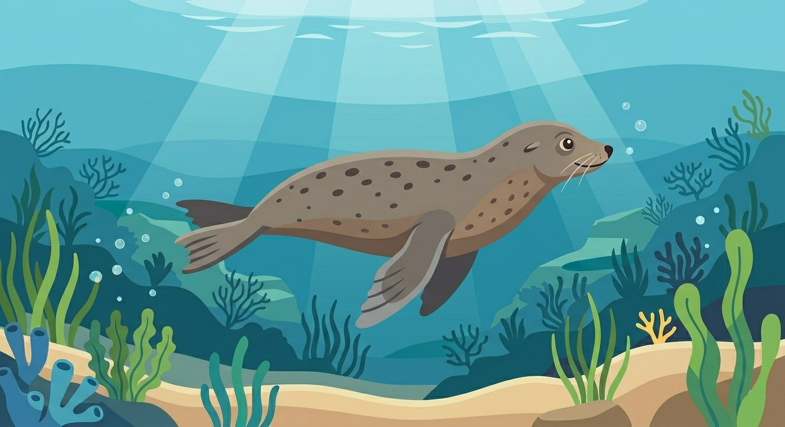
El lobo fino de Guadalupe vive en islas mexicanas del océano Pacífico. Aunque estuvo cerca de desaparecer por la caza excesiva, actualmente sigue protegido debido a su vulnerabilidad.
Factores que ponen en riesgo a las especies marinas de México.